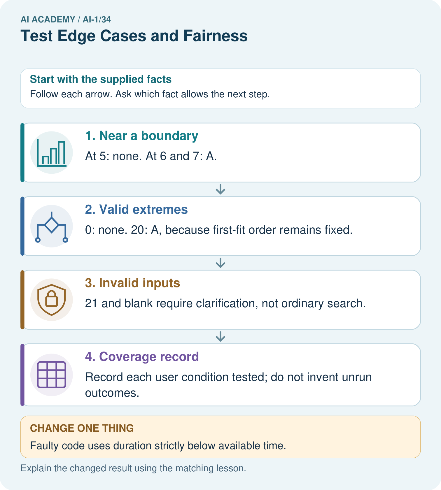

AI Academy · Level 1 · Grade 6 · Week 34 · Workbook
Test Edge Cases and Fairness
Learn to understand, design, build, test and explain AI systems responsibly.
Project: Helpful Classroom Sorter
Workbook · 1 of 18
Recall and choose your starting point
Try the recall before opening notes. Then use a different colour or a labelled second line to correct your explanation.
Test Normal Cases
Without opening the old lesson, explain one key idea from Test Normal Cases. Give an example and a mistake that the idea helps you avoid.
Design the Decision Process
Without opening the old lesson, explain one key idea from Design the Decision Process. Give an example and a mistake that the idea helps you avoid.
Humans Set Boundaries
Without opening the old lesson, explain one key idea from Humans Set Boundaries. Give an example and a mistake that the idea helps you avoid.
Workbook · 2 of 18
Practise with fading help
Use W2: Check the validation boundary for Testing boundaries and varied conditions. Record the answer once; the lesson and workbook refer to the same attempt.
| Given inputs | Procedure I chose | Middle steps | Result and check |
|---|---|---|---|
Workbook · 3 of 18
Individual reasoning check
Use the worked case for Testing boundaries and varied conditions. Proposed explanation: “At the limit means outside the rule”. Decide whether this explanation is supported. Point to the step or supplied fact that decides; explain your repair if needed.
Workbook · 4 of 18
Independent transfer case
Independent case: Find an independent capacity boundary
A new equipment selector lists E1 first, capacity 4; E2 second, capacity 8. Valid group size is a whole number from 1 to 10. Choose the first item whose capacity is at least the group size, or no match; invalid input needs clarification. A faulty version uses capacity strictly greater than group size. Independently give correct and faulty outputs for groups 3, 4 and 5, then for group 8. Explain the defect and give the correct response to group 0. No booking occurs.
Attempt this case before feedback. Record any help. Earlier examples below are further practice; a case already practised with feedback cannot establish fresh transfer.
Workbook · 5 of 18
Your learning target
Before testing, define outcomes for clean paper, metal foil, mixed packaging and an unreadable card. The team later changes mixed packaging's expected result to match its sorter. Explain the evaluation problem.
Workbook · 6 of 18
Solve the given case
A sorter handles clean paper but fails on crumpled paper and mixed packaging.
Design revealing tests.
Show your trace, calculation or evidence
Workbook · 7 of 18
Check a changed case
A sorter works on clear photos. Test a blurred pencil, a dim book and an unfamiliar lunch box. What makes these useful tests?
My independent answer and reason
Week 34 Test and reflect
Workbook · 8 of 18
Design a revealing test
Create a changed input, boundary case or missing-information case. Write the expected answer or safe response before testing.
| Test record | My evidence |
|---|---|
| Changed input or condition | |
| Expected answer or fallback | |
| Observed result | |
| Why the result occurred |
Workbook · 9 of 18
Project checkpoint
Expand the sorter test suite with edge, missing-data, and fairness cases plus expected safe behavior.
The project change and evidence I will keep
Workbook · 10 of 18
Self check
I can explain the mechanism. I can show evidence. I can handle a changed case. I can name a limit. Mark each as not yet, with help or independently, and attach supporting work.
Teacher review ____________________ Next step ____________________
Workbook · 11 of 18
Transfer practice from the original programme
Before testing, define outcomes for clean paper, metal foil, mixed packaging and an unreadable card. The team later changes mixed packaging's expected result to match its sorter. Explain the evaluation problem.
Record support used: none, hint or teacher explanation.
Workbook · 12 of 18
W1 Plan the equality tests
For catalogue B version 1, write expected outputs and reasons for 9 Yes, 10 Yes and 11 Yes. Explain why keeping quiet and catalogue fixed helps examine the time boundary. Predict what the faulty strictly-less-than S comparison does for 10 Yes.
Workbook · 13 of 18
W2 Check the validation boundary
Classify these requests before searching: 0 Yes, 30 Yes, 31 Yes, blank minutes with Yes, 10.5 Yes, and 10 Maybe. Give each expected output or clarification and explain whether any candidate should be checked. Why must zero not be treated like a blank?
Workbook · 14 of 18
W3 Run a labelled catalogue variation
Copy B version 1 and change only B1’s duration to 20, labelling it B version 2. Write the expected result for 12 Yes, then run your saved P1 and the manual baseline on this copy. Record the actual traces separately. Explain why an answer checked against B version 1 would not be a fair judgement of this run.
Workbook · 15 of 18
W4 Find an independent capacity boundary
A new equipment selector lists E1 first, capacity 4; E2 second, capacity 8. Valid group size is a whole number from 1 to 10. Choose the first item whose capacity is at least the group size, or no match; invalid input needs clarification. A faulty version uses capacity strictly greater than group size. Independently give correct and faulty outputs for groups 3, 4 and 5, then for group 8. Explain the defect and give the correct response to group 0. No booking occurs.
Workbook · 16 of 18
W5 Audit what changed in the test
A team runs 15 No on B version 3, gets B4, but records “B version 1” and calls B4 correct. Explain the documentation error and the expected result under each catalogue. State what must stay the same in a fair prototype-versus-baseline comparison and why a test not yet run cannot be counted as a pass.
Workbook · 17 of 18
Feedback, return check and learning record
| Evidence | My record |
|---|---|
| Worked alone / hint / model | |
| First step I repaired and why | |
| New case checked later; date and result | |
| What I can now explain without notes | |
| One remaining question |
Revisit this idea with your teacher after a delay. Familiarity is different from explaining and using it on a changed case.
Workbook · 18 of 18
Pictorial case practice: Test Edge Cases and Fairness
A fictional craft-book chooser accepts requests for whole available minutes from 0 to 20.
Booklet A takes 6 minutes; B takes 12. Return first duration at most available time.
Check 5,6,7; also 0,20,21 and blank. Same catalogue applies to every user.

Which single boundary run most directly detects the strict-comparison bug, and why?
Support used: alone / hint / worked example. This record is practice evidence.
Project connection: Add sorter boundary cases, missing fields and relevant user conditions to the test plan before making fairness claims.